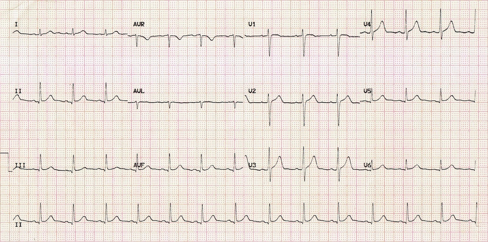

Arrhythmias
Raja Selvaraj
Organization of this talk
- Normal rhythm
- Arrhythmias - Introduction
- Case illustrations
- Management - interspersed
Arrhythmias
- Lack of rhythm
- Not normal rhythm
Normal rhythm
- Origin
- Rate
- AV conduction
Normal rhythm
Arrhythmias - Classification
- Bradyarrhythmia
- Tachyarrhythmia
Bradyarrhythmias
- Sinus node disease (too few P waves)
- Atrioventricular block (too few QRS, P > QRS)
Sinus node disease

Sinus node disease
- Sinus arrest
- Sinus bradycardia
- Sino-atrial block
- Second degree type I
- Second degree type II
Atrioventricular block
First degree
Second degree type I
Second degree type II
Third degree
Tachyarrhythmias
- Supraventricular tachycardia
- Ventricular tachycardia
Supraventricular tachycardia
Sinus tachycardia
Atrial tachycardia
Atrial flutter
Atrioventricular nodal reentrant tachycardia
Atrioventricular reentrant tachycardia
Atrial fibrillation
Ventricular tachycardia
Premature ventricular complexes
Ventricular tachycardia
Ventricular fibrillation
ECG display
30 year old male - ECG done for pre-employment check up

60 year old female, complains of presyncopal episodes

Bradycardia - symptoms
- Giddiness
- Syncope
- Fatigue
- Breathlessness
- Death
Management of sinus bradycardia
- Rule out underlying cause
- Drugs ?
- Physiological ?
- Pacemaker implantation
Drugs
- Atropine
- Isoprenaline
- Orciprenaline
- Long acting theophylline
55 year old male, asymptomatic, referred for abnormal ECG

AV Conduction block - degrees
- First: All P waves conducted
- Second: Some P waves conducted
- Third: No P waves conducted
Young male, found to have irregular pulse

Second degree AV block - Mobitz types
- Type 1 - Progressive PR prolongation before block
- Type 2 - Fixed PR interval of conducted beats
PR and RR intervals in Wenckebach block
Middle aged female with syncope

Mobitz types - implications
- Type 1
- Block above His
- Usually benign
- Type 2
- Block at or below His
- Usually needs treatment
Atrioventricular conduction system
70 year old male, fainted at home
Pacing - temporary

Pacing - permanent
Pacing for CHB

Clinical examination in bradycardia
How can you differentiate sinus dysfunction from atrioventricular block?
- Pulse rate
- Second heart sound
- JVP
Rapid pulse in pre-operative patient
Sinus tachycardia
- Fever
- Stress
- Hypovolemia
- Hyperthyroidism
- Inappropriate sinus tachycardia
10 year old boy referred from pediatric OPD for irregular pulse
Premature atrial beats
- Benign in absence of structural heart disease
- "Missed beats"
- Rarely need treatment
65 year old female with COPD and palpitations
Vagal maneuvers in narrow QRS tachycardia
- Carotid sinus massage
- Straining / gag reflex
- Eyeball pressure
- Diving reflex
Adenosine
Atrial tachycardia
What will be the response to adenosine?
- Terminates tachycardia
- Tachycardia continues with AV block
- Does nothing
40 year old with palpitations
After adenosine bolus
Saw tooth flutter waves
Atrial flutter
- Classic example of macroreentry
- Can be treated with AV blocking drugs
- Rhythm control by ablation
Macroreentry
Middle aged female with palpitations
PSVT
- Paroxysmal supraventricular tachycardia
- Reentry using two pathways in AV node or AV node and AP
- Response to adenosine?
Reentry
ECG after termination of tachycardia
WPW syndrome
Radiofrequency ablation

Elderly lady with dizziness
Atrial fibrillation
- Commonest arrhythmia
- With or without structural heart disease
- Loss of atrial pump function
- High ventricular rate
- Thromboembolism
- Rate versus rhythm control
Middle aged male with previous myocardial infarction
Palpitations and presyncope
Ventricular arrhythmias
- Idiopathic
- Structural heart disease
- Risk of sudden death
- Drugs
- Lignocaine
- Amiodarone
Young female with recurrent syncope
Patient in CCCU
Treatment ?
Defibrillator
Implantable defibrillator
Summary
- Abnormalities of rhythm are an important class of heart disorders
- May present as slow rate or rapid rate
- Can be life threatening in some patients
- Wide variability in presentation, evaluation and management
- Repetitive exposure to ECGs, management of individual patients